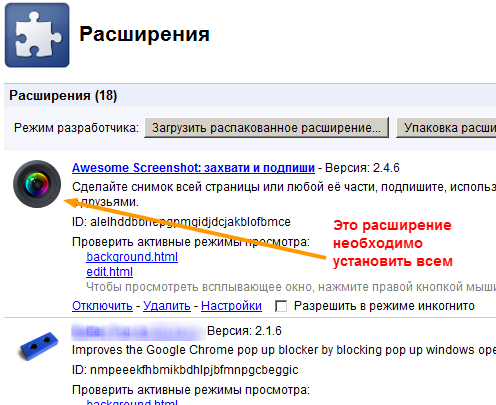

Как у любого человека, который не только сидит в интернете, а иногда и работает в нем у меня нередко появляется необходимость показать на определенную часть интернет-страницы собеседнику, который не находится рядом.
Проще всего, конечно, отправить ссылку на скриншот странички, но иногда нужно прямо пальцем ткнуть. И сегодня я нашел способ это сделать.
Плагин для браузера Awesome Screenshot, позволяет сделать скриншот страницы или отдельной ее части, добавить стрелки, кружочки, подписи, выложить на сервер и получить линк.
